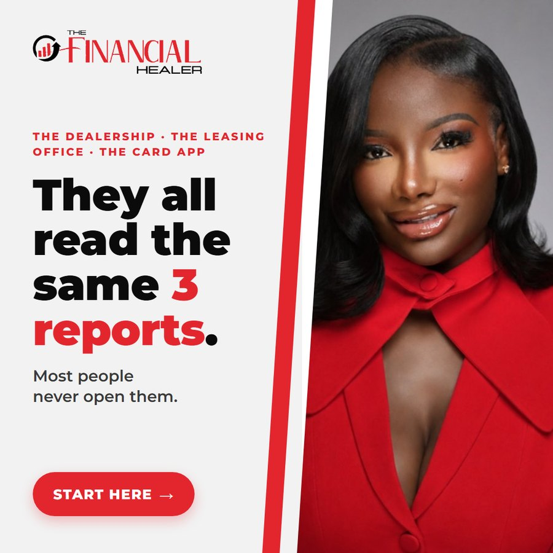

The dealership, the leasing office and the card company all read the same three reports. Most people have never opened them.
Lenders don't go by the score in an app. They pull Experian, Equifax and TransUnion and read every line. A late payment reported twice. An address that was never yours. An account nobody recognizes. It all gets read.
The law gives everyone the right to dispute items that are inaccurate, incomplete, outdated or unverifiable. Accurate items generally stay, and I'll tell you that straight.
My team pulls all three reports and goes through them with you line by line, so you know what's there before the next application.
You can dispute on your own for free. If you'd rather have it handled, start with a few quick questions. Talking it through costs nothing.
The Financial Healer LLC disputes inaccurate, incomplete, outdated or unverifiable items. Accurate items generally stay. No score, deletion or timeline is promised.
